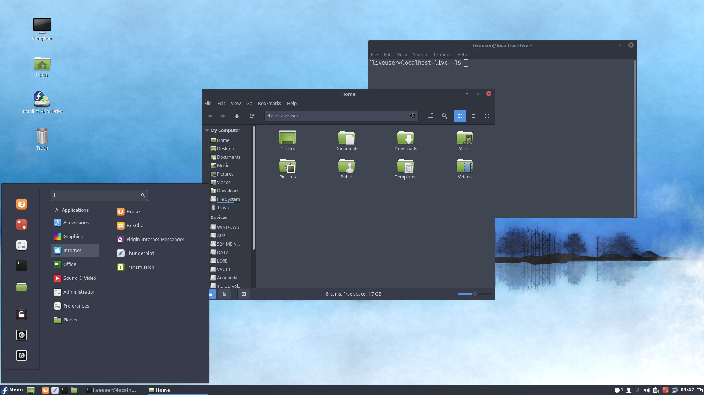

Ambientes de Escritorio
El mundo de Linux puede parecer muy complicado al principio. Al empezar se presentan muchos conceptos, como el shell, el gestor de paquetes, el tipo de paquetes, el tipo de distribución, etcétera; pero el más importante de todos, es el ambiente de escritorio. DE (por sus siglas en inglés Desktop Environment) es la forma en la que el usuario interactúa con el sistema, una GUI (Graphical User Interface).
Cierto, muchas de las cosas que se encuentran bajo el capó son importantes y pueden afectar la experiencia del usuario de una distribución a otra, pero utilizando la interfaz gráfica, todos los usuarios pueden conseguir lo que buscan de su sistema operativo.
En Linux, existen varios ambientes de escritorio, cada uno con su capacidad de personalización, tipo de usuarios objetivo y conjunto de características que lo distinguen de los demás.
Imagen tomada de The GNOME Project
GNOME
GNOME es uno de los ambientes de escritorio más utilizados. Distribuciones famosas como Ubuntu, Fedora y Manjaro Linux ofrecen este ambiente de escritorio. Toma prestados muchos conceptos de macOS, como una barra de tareas en la parte superior que muestra la aplicación en uso, fecha y hora y acceso rápido a los ajustes del sistema, además del dock y el aspecto de las aplicaciones. No trae consigo una barra de herramientas universal, pero es sustituida por un menú conceptual único para cada aplicación en la barra de tareas. Es bastante personalizable gracias a sus extensiones, pero lo más probable es que la mejor experiencia sea la que viene por defecto.

Imagen tomada de Fedora Cinnamon Spin
Cinnamon
Cinnamon es lo que conocemos como un spin. Es derivado de GNOME, por lo que comparte bastante código con el mismo y hace que sea compatible con las aplicaciones pensadas para GNOME. Tiene un aspecto muy parecido a Windows, con un menú inicio, barra de tareas y acceso a atajos de sistema. Fue ideado para hacer más cómodos y bienvenidos a usuarios de Windows en Linux. Distribuciones como Ubuntu y Fedora tienen versiones con este sabor de Linux (esta es otra forma de llamarlo), aunque la más conocida por tener este ambiente de escritorio es Linux Mint.
Imagen tomada de Kde.org
KDE Plasma
KDE Plasma es, junto con GNOME, quizá uno de los pesos pesados en esta materia. Por defecto, Plasma viene con un aspecto inspirado en Windows, con una barra de tareas, menú inicio y acceso a atajos de sistema, pero es una pieza de software altamente modular, por lo que se presta para imitar aspecto y experiencia de otros ambientes de escritorio e, incluso, de sistemas operativos completamente diferentes. Es la más personalizable de la lista. Por lo general, es utilizada por usuarios un poco más avanzados que tienen una idea de su experiencia óptima en sistemas operativos y pueden replicarla con facilidad en este canvas a su disposición.
Por supuesto, hay más ambientes de escritorio, estos sólo son algunos de los más conocidos. Y tu, ¿ya sabes que sabor de Linux te gusta más? Puedes echar un vistazo a nuestra lista curada de distribuciones Linux para conocer un poco más de lo que se ofrece en el mercado.